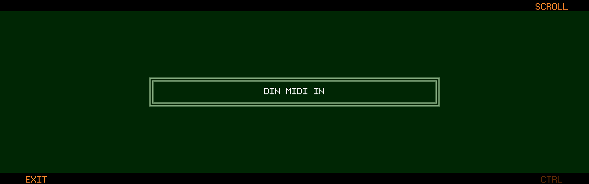
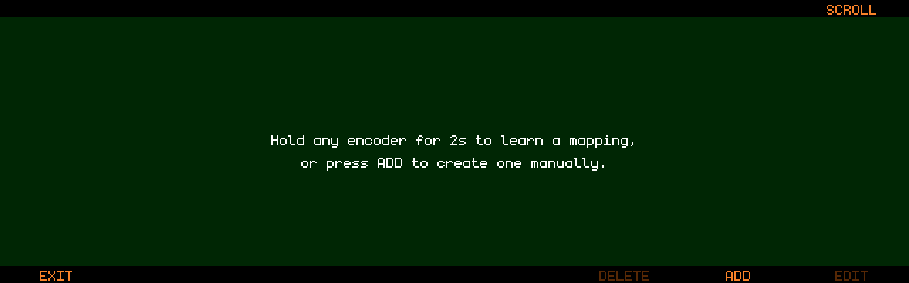

MIDI Remote Control (since v1.1.4)
Track8’s encoders and most transport/edit buttons can be driven from an external MIDI controller — faders, knobs, buttons and jog wheels. Mappings are created either with MIDI Learn (hold an encoder) or manually in a mapping editor.
- Mappings are global: they survive project switches and reboots
- They are stored in a separate
midi.jsonfile next tomain.json, so they can be backed up and copied between devices - MIDI Remote Control is only available on the Track8 hardware (not in the Companion App)
🔌 Step 1: Flag your controller (DEVICE)
Go to UTILITY → MIDI → DEVICE.
- The list shows the built-in
DIN MIDI INplus every connected USB MIDI input - Scroll with Encoder 8, toggle the
CTRLflag with Track Button 8 (or push Encoder 8) EXIT(Track Button 1) returns to the MIDI settings
A device flagged CTRL becomes a control surface: its CCs drive your mappings and are no longer recorded into MIDI tracks. Devices you disconnect stay in the list greyed out, keeping their flag — they work again as soon as you plug them back in.

🎓 MIDI Learn (encoders)
On a supported screen, hold any encoder for 2 seconds to open the MIDI Learn modal:
- If the encoder has multiple functions (push states), select the function you want with Encoder 6
- Move a knob/fader on your controller — the captured source appears as e.g.
CC#74 ch 1(it takes two consecutive messages to register, so a single stray event won’t latch) CONFIRMwith Track Button 6, orCANCELwith Track Button 3
Supported screens:
- Audio Overview
- Track FX
- Track Mixer (new in v1.2.1)
- Track Sends (new in v1.2.1)
- Master FX
- Mastering
- External Channels
Notes on how encoder mappings behave:
- A full sweep of the CC (0–127) always covers the full parameter range
- A mapping only fires while its screen is open and its function mode is active — cycling the encoder to another mode does not silently retarget your knob
- Audio Overview encoders are per-track: a mapping on Encoder 3 always drives Track 3. Map all 8 encoders for a full fader bank — or create a
SELmapping inCONTROLthat drives whichever track is selected (see Following the selected track) - Track FX and Track Sends mappings learned this way are locked to the track (and filter node) that was selected when you learned them. To make one follow the selected track instead, edit it in
CONTROLand setTRACKtoSEL
🗂 Managing mappings (CONTROL)
Go to UTILITY → MIDI → CONTROL to see all mappings, one row per mapping (source → screen / encoder / function).

- Encoder 8: scroll the list
ADD(Track Button 7): create a mapping manuallyEDIT(Track Button 8, or push Encoder 8): edit the highlighted mappingDELETE(Track Button 6): delete the highlighted mapping (with confirmation)EXIT(Track Button 1): back to the MIDI settings
The Add/Edit modal
| Control | Sets |
|---|---|
| Encoder 2 | CC number (0–127) |
| Encoder 3 | MIDI channel (1–16 or ANY) |
| Encoder 4 | Target screen |
| Encoder 5 | Target encoder (1–8, or SEL = the selected track’s encoder on the Audio Overview / Track Mixer) or button action |
| Encoder 6 | Function (only for encoders with multiple modes — e.g. Volume / Pan / sends on the mixers, per-node Frequency / Q / Gain (N1 FREQ … N4 GAIN) and Attack / Sidechain on Track FX, the delay / reverb / mastering pickers) |
| Encoder 7 | Mapping mode: ENC (encoder) or BTN (button) |
| Encoder 8 | Track binding on Track FX / Track Sends: SEL (follows the selected track) or a fixed track 1–8 (since v1.2.2-SNAPSHOT) |
| Track Button 2 | CANCEL |
| Track Button 8 | SAVE / REPLACE |
While the modal is open, incoming CCs from your control surface auto-fill the CC number and channel — just wiggle the control you want to use.
The list shows each mapping’s binding: Audio Overview / Enc SEL / Volume, Track Fx SEL / Enc 2 / N1 FREQ or Track Fx Track3 / Enc 2 / N1 FREQ.
🎯 Following the selected track
(since v1.2.2-SNAPSHOT)
If you know the auto channel on Elektron boxes — one MIDI channel that always addresses the active track — this is the same idea: map a set of knobs once, and they control whichever track is selected on the Track8. Press a track button, and the same knobs now tweak that track.
These mappings are created manually in UTILITY → MIDI → CONTROL (ADD), not with MIDI Learn:
- Audio Overview / Track Mixer (Encoder N = Track N): turn Encoder 5 past
8toSEL. The mapping drives the selected track’s Volume, Pan, sends, … — whatever you pick as the function - Track FX / Track Sends (one track on screen at a time): leave Encoder 8 (
TRACK) onSEL. Pick the function with Encoder 6 (Frequency / Q / Gain per filter node —N1 FREQ…N4 GAIN— Attack / Sidechain, Release, Threshold, Gain, sends). SetTRACKto1–8instead to lock the mapping to one track, which is what MIDI Learn does when you hold an encoder - The selected track is the one highlighted on the Audio Overview, Track Mixer, Track FX and Track Sends screens — a
Selectbutton mapping (see below) switches it from your controller, so a controller page with 8 select pads plus one set of knobs covers all 8 tracks
Tips:
- A
SELmapping and a fixed-track mapping for the same function can coexist, as long as they use different CCs. Keeping the follow set on its own MIDI channel (e.g. channel 16) makes that easy to organise - Track8 applies knob movement relative to the last position it saw, so switching tracks never makes a value jump — but a knob’s physical position does not reflect the newly selected track’s value until you move it
- Manually created filter mappings name their node (
N1 FREQ…), so a follow mapping addresses the same node on every track. Map all twelve for full filter control from your controller
🔘 Button mappings
Set Encoder 7 to BTN in the Add/Edit modal. Button mappings are momentary: the action fires once when the CC value rises to 64 or above, and re-arms when it falls below 64 — perfect for pads and momentary switches.
Global actions (work on every screen):
Play, Record, Left, Right, Shift Left / Shift Right (marker jump), Loop Tgl, Loop In, Loop Out, Punch Tgl, Set Marker, Cut, Copy, Paste
Audio Overview actions: Select / Mute / Solo / Arm for each of the 8 tracks
MIDI Overview actions: Select / Mute / Solo for each of the 8 tracks
🎡 Jog wheel scrolling
Map a jog wheel to the Scroll function (e.g. Audio Overview → Scroll). Scroll mappings use relative CC decoding instead of absolute positions, so an endless wheel works without end stops:
- Sign-magnitude encoding (e.g. Korg nanoKONTROL) is detected automatically
- Two’s-complement / Mackie-style encoding (e.g. Behringer X-Touch, most DIY jog wheels) is detected as well (improved detection new in v1.2.1)
Set your controller’s encoder to a relative CC mode if it offers one.
⚠️ One CC, one function
Each CC can control exactly one function, and each function can be controlled by exactly one CC. If a mapping you learn or save would collide with an existing one — same CC source or same target — Track8 shows a warning listing what would be replaced, and the confirm button changes to REPLACE. Confirming removes the old mapping; cancelling keeps it.
Tip: since a channel setting of
ANYintercepts that CC on every channel, two mappings for the same CC number on different channels only work if neither is set toANY.